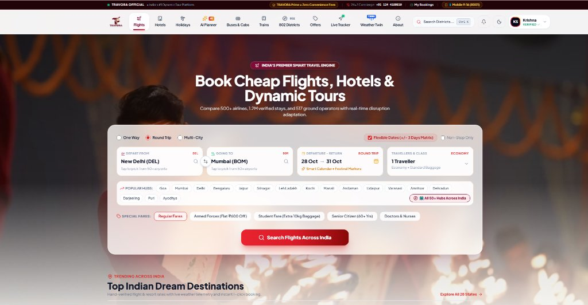
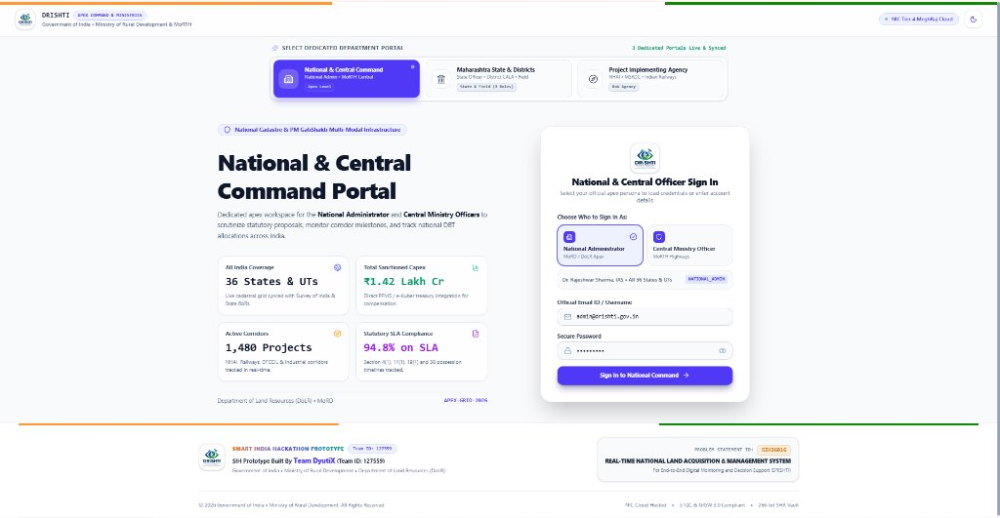
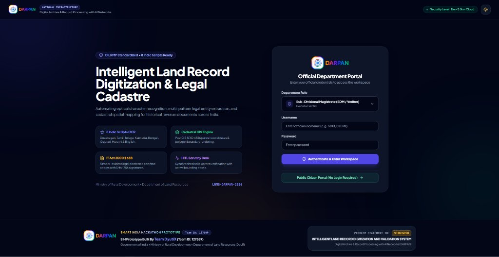

SELECTED WORK.
REAL-WORLD IDEAS.
A collection of systems, experiments and digital solutions built through curiosity, collaboration and continuous learning.



SYSTEM ARCHITECTURES & ACADEMIC PROJECTS
Specialized backend engines, financial workflows, and database systems engineered with strict relational logic, normalization, and algorithmic integrity.
RASEED
A collaborative system exploring optical parsing (OCR), automated expense categorization, tax calculation heuristics, and financial reconciliation workflows into normalized ledgers.
NOTES TRACKER SYSTEM
Engineered to index, cross-reference, and structure modular academic knowledge. Features relational database normalization, inverted search indexes, and rapid query filtering across complex course notes.
OFFICE ATTENDANCE SYSTEM
Comprehensive backend logic enforcing shift compliance, automated verification routines, exception handling, and granular audit reporting backed by relational MySQL schemas.
OFFICE ASSET ALLOCATION SYSTEM
End-to-end asset requisition, depreciation tracking, hardware custodian allocation, and lifecycle decommissioning verification using relational data integrity guarantees.
WANT TO COLLABORATE ON A SYSTEM?
Have an architecture in mind or need a dedicated software builder for your hackathon or enterprise project?